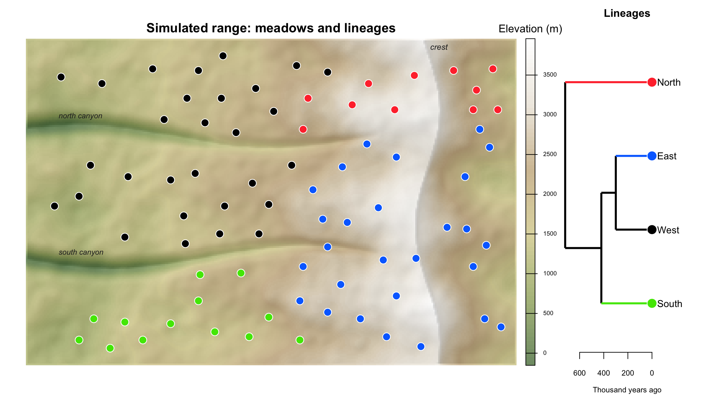
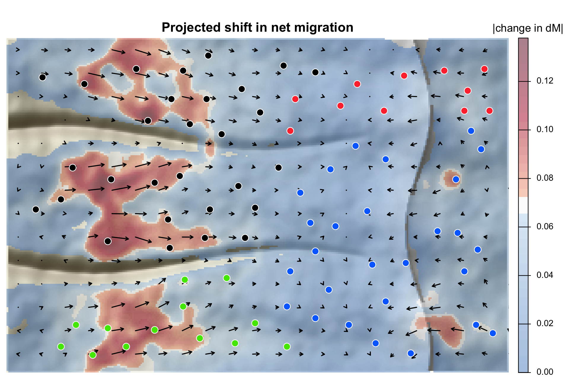

Migration corridors and genetic range shifts from landscape genetic data.
corridoR models genetic connectivity along migration corridors and forecasts how it shifts under climate change. It implements the workflow of Maier et al. (2022, Heredity), which predicted upslope range shifts in the Yosemite toad:
-
Genetic distances. Read genotypes from STRUCTURE, GENEPOP, VCF, GenAlEx, FSTAT or PLINK files (or
adegenetandvcfRobjects), then compute pairwise FST and directional differentiation (dM, the net direction of migration). - Least cost corridors. Widen least cost paths into corridors whose cells are weighted by how likely a route through them is.
- Raw environmental features. Summarize any raster inside each corridor, plus the contrast between source and destination sites.
- A bandwidth for each feature group. Let climate act over a broad corridor and soil over a narrow one, chosen by cross-validation.
- Cubist models of FST and dM, which extrapolate to future climate better than random forests.
- Maps of projected change, with arrows showing the net direction of migration.


A quick look
library(corridoR)
ex <- corridor_example(acc = TRUE) # a simulated mountain range, 80 meadows
pc <- read_genotypes(ex$files$structure) # or GENEPOP, VCF, ...
fst <- pairwise_fst(pc)
dM <- directional_gst(pc)$dM
# corridor weights between two meadows, and climate summarized inside them
w <- lcc_weights(ex$acc, "M20", "M60", q = 0.05)
corridor_extract(ex$env, data.frame(from = "M20", to = "M60"), acc = ex$acc, q = 0.05)The full tutorial runs all six steps on the simulated range, from genotype files to the maps above, and the getting-started vignette is a short version. The same analysis on real data is in the Yosemite toad tutorial.
Genotype formats
| Format | Read with | Notes |
|---|---|---|
STRUCTURE (.str) |
read_genotypes() |
one or two rows per individual; optional label, POPDATA, POPFLAG, LOCDATA, PHENOTYPE and extra columns; marker-name row detected |
GENEPOP (.gen) |
read_genotypes() |
2- or 3-digit alleles, haploid or diploid |
VCF (.vcf, .vcf.gz) |
read_genotypes(pop = ) |
any ploidy, phased or unphased, multiallelic |
GenAlEx (.csv) |
read_genotypes() |
codominant layout |
FSTAT (.dat) |
read_genotypes() |
|
PLINK (.ped/.map, .raw) |
read_genotypes() |
convert .bed with plink --recode A
|
genind, genpop, genlight, vcfR
|
as_popcounts() |
from adegenet or vcfR |
Precomputed matrices of FST or dM from any other software work too.
Citation
If you use corridoR, please cite both papers:
Maier PA, Vandergast AG, Ostoja SM, Aguilar A, Bohonak AJ (2022) Landscape genetics of a sub-alpine toad: climate change predicted to induce upward range shifts via asymmetrical migration corridors. Heredity 129:257-272. https://doi.org/10.1038/s41437-022-00561-x
Maier PA (2027) corridoR: Migration corridors and genetic range shifts from landscape genetic data. Journal of Open Source Software (in preparation).
The first introduced the method; the second describes the package. citation("corridoR") prints both.